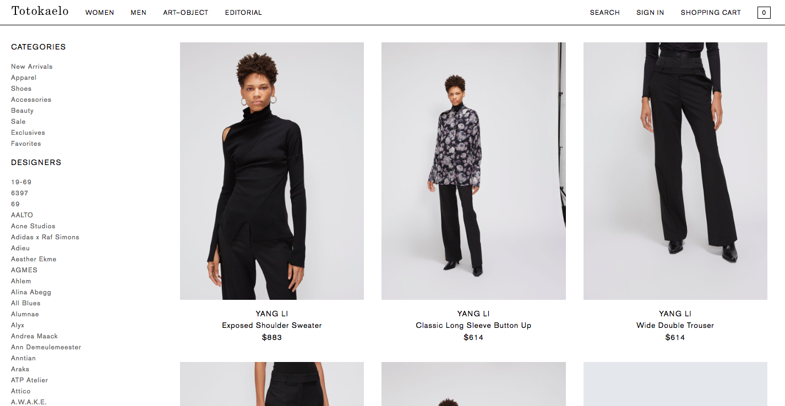

Amazon Fashion
Comparative Shopping Study
Problem
At the time of this study, Amazon used the same interface for all product browsing, whether you were looking for an HDMI cable or a Michael Kors jacket. The fashion team had a hunch customers did not shop for clothing on Amazon (especially premium brands) because the information-rich browsing interface felt "busy" rather than "immersive".
Might an "immersive" interface with less product information and more real-estate devoted to high-resolution product images better engage clothing customers?
Layout of the existing information-centric (left) and suggested image-centric (right) product browsing interfaces (Not actual mockups)
Research Plan
I started by identifying two goals for the study. First, validate the Fashion team’s assumptions about why customers were going to other sites to shop for premium clothing. Second, test if an image-centeric browsing experience would better engage these customers on Amazon. “Engage” and "immersive" are fuzzy terms. Since the Fashion team had a hunch shopping for preium brands was more emotive than evaluative, I focused on how customers felt and talked about brands and platforms as they shopped. If our results were promising, we could run an A/B test to measure engagment and immersion more precisely.
To elicit customer thoughts, comments, and feelings I designed a comparative shopping study where customers first shopped for premium clothing on a site of their choice, and then shopped for a similar item on a high-fidelity prototype of an image-centric browsing experience on Amazon. Using a high-fidelity prototype elicited qualitative reactions to a polished interface while minimizing developer time.
Comparative Shopping Study
I worked with an external recruiter to find participants who had recently 1) shopped for premium brand clothing online and 2) used Amazon to shop for other products. Asking customers to first shop on their preferred clothing site was highly generative for the Fashion team, identifying both key competitors and the attributes of their sites and brands that engaged customers. Using the prototype I was able to ask customers about their impressions of Amazon's clothing offerings, observe their reactions to the new Amazon browing experience, and ask follow-up questions as they continued shopping.
An example of one customer's preferred site for browing preium brand clothing. Customers highlighted feelings these sites evoked as I observed how they browsed.
Results
I created a report for the Fashion team that highlighted the “curated” and “distraction-free” interfaces that customers enjoyed on competitor's sites as well as the design decisions that supported these experiences. I also highlighted the aspects of the prototype that participants responded to positively and negatively.
This study was one of many that led to Amazon’s current image-centric browsing experience for clothing.